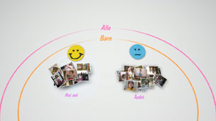
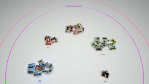

Organisering af fotos
Gruppering af fotos
Du kan vælge begivenheder og derefter gruppere fotoene inden for de valgte begivenheder med en af de indstillinger, der beskrives nedenfor. Vælg de begivenheder, der indeholder de fotos, som du vil gruppere. Tryk på  -tasten, og vælg derefter
-tasten, og vælg derefter  (Gruppér). Hvis du vil begrænse antallet af grupperede fotos, skal du vælge den eller de grupper, der indeholder de fotos, som du vil gruppere, og derefter gruppere fotoene med en anden indstilling under (Gruppér).
(Gruppér). Hvis du vil begrænse antallet af grupperede fotos, skal du vælge den eller de grupper, der indeholder de fotos, som du vil gruppere, og derefter gruppere fotoene med en anden indstilling under (Gruppér).
| Dato/tid | Grupper efter fotoenes optagedato og -klokkeslæt. |
|---|---|
| Antal personer | Grupper efter det antal personer, der er på fotoene. |
| Aldersgruppe | Grupper efter den forholdsmæssige alder på de personer, der er på fotoene. |
| Udtryk | Grupper efter ansigtsudtrykket på de personer, der er på fotoene. |
| Farve | Grupper efter den eller de farver, der findes i fotoene. |
| Kameratype | Grupper efter den kameramodel, som fotoene blev taget med. |
| Spil | Grupper efter spillets titel. |
| Album | Grupper efter album, der er oprettet under  (Foto) på skærmen XMB™. (Foto) på skærmen XMB™. |
Tips
- Med [Vælg alle] grupperes alle fotos i [Biblioteksområde] i overensstemmelse med den valgte indstilling.
- Grupperingen baseres på en analyse af fotoene og i nogle tilfælde er resultaterne ikke som forventet.
- Du kan oprette en spilleliste med grupperede fotos.
Eksempler på grupperede fotos: Fotos af børn, som smiler
1. |
Grupper fotoene ved at vælge |
|---|---|
2. |
Vælg den gruppe, der hedder [Børn], og tryk derefter på |
3. |
Vælg  |
Eksempler på grupperede fotos: Fotos med blå himmel
1. |
Grupper fotoene ved at vælge |
|---|---|
2. |
Vælg den gruppe, der hedder [Landskab/andet], og tryk derefter på |
3. |
Vælg  |
Sletning af fotos
For at slette et foto eller album skal du vælge fotoet eller albummet, tryk på knappen , og vælg derefter  (Slet).
(Slet).
Tip
Hvis du sletter fotos i [Biblioteksområde], slettes fotoene også fra PS3™-systemets systemlager.